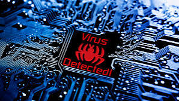
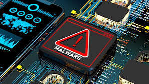
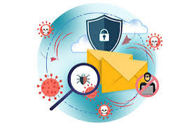

Viruses, Malware, Spam, and Antivirus Software are all key terms in the field of cybersecurity. Here’s an overview of each:
1. Viruses
A virus is a type of malicious software program that attaches itself to a legitimate program or file. When the infected program is executed, the virus activates and spreads to other files and programs on the system, often without the user's knowledge. Viruses can corrupt data, slow down system performance, steal information, or cause other forms of damage. They often require user action to spread, such as opening an infected email attachment or running an infected file.
Key characteristics of viruses:
Must attach to a host program or file. Can self-replicate and spread to other systems. Can cause data loss, system crashes, or hardware damage.
2. Malware
Malware (short for "malicious software") is a broader term that encompasses all types of harmful software, including viruses, worms, trojans, ransomware, and spyware. Malware is designed to harm, exploit, or steal information from a computer or network. Unlike viruses, some types of malware (like worms) can spread autonomously, without any user interaction.
Types of malware:
Trojans: Malware disguised as legitimate software that tricks users into downloading or running it.
Worms: Malware that replicates itself to spread across networks without user interaction.
Ransomware: Encrypts the victim's data and demands payment (ransom) for the decryption key.
Spyware: Secretly monitors and collects user data, often without consent.
Adware: Displays unwanted advertisements and can also track user activity.
3. Spam
Spam refers to unsolicited, typically irrelevant or inappropriate messages sent over the internet, primarily for advertising purposes. It is most commonly seen in email but can also appear in social media, messaging apps, or online forums. Spam messages can range from promotional ads to phishing attempts, and while not inherently harmful, they often serve as a vehicle for distributing malware, phishing attacks, or scams.
Key characteristics of spam:
Unsolicited, bulk messages. Often used for advertising or fraudulent purposes. Can be a gateway for malware and phishing attacks.
4. Antivirus Software
Antivirus software is designed to detect, prevent, and remove malicious software (viruses, malware, etc.) from a computer or network. It scans files, programs, and websites for known patterns of malicious activity and provides real-time protection against potential threats. Modern antivirus solutions have evolved beyond just detecting viruses and now include protection against a wide range of malicious software, including worms, trojans, ransomware, and spyware.
Functions of antivirus software:
Real-time scanning: Monitors incoming files, downloads, and system activity for malicious behavior.
Signature-based detection: Identifies known threats using a database of virus signatures.
Heuristic analysis: Detects unknown or new threats by analyzing their behavior and characteristics.
Quarantine: Isolates suspected threats to prevent further damage.
Automatic updates: Keeps the virus definition database up to date with the latest threats.
Relationship Between These Elements:
Viruses and malware: Viruses are a subset of malware, which includes many other harmful software types.
Spam and malware: Spam is often used to distribute malware, especially through phishing links or infected attachments.
Antivirus and malware/viruses: Antivirus software is critical in defending against malware, including viruses, by detecting, blocking, and removing them before they cause harm.
In summary, viruses, malware, and spam represent various threats that can harm computer systems, steal data, or exploit users, while antivirus software serves as a key defense mechanism to pr